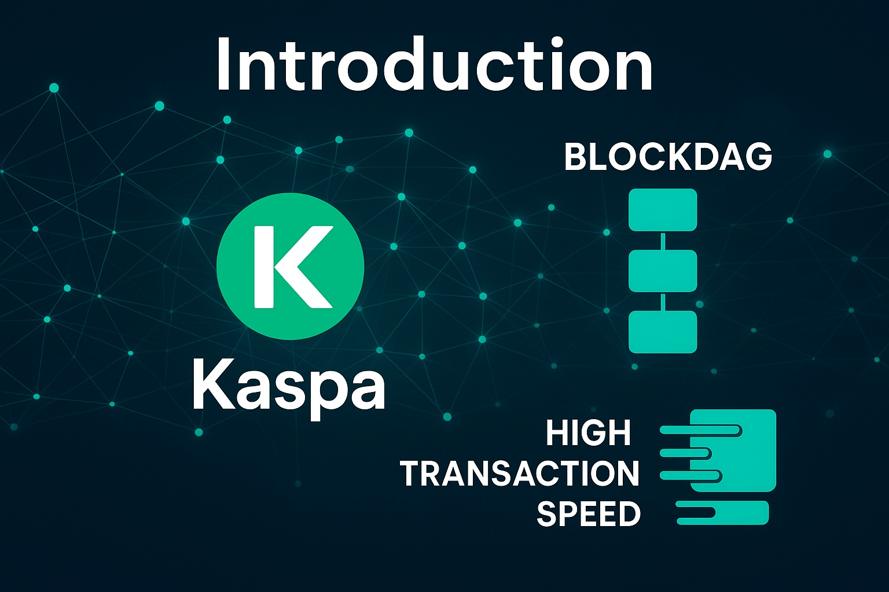
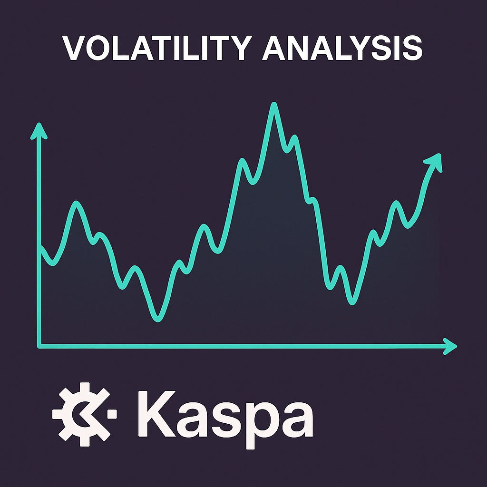

Kaspa Price Prediction for End of 2025: In-Depth Analysis and Insights
The information in this article is provided for educational purposes only and is not investment advice. Cryptocurrency investments carry risks.
Introduction
As of August 20, 2025, 01:13 AM EEST, Kaspa (KAS) is trading at approximately $0.17, establishing itself as a high-performance layer-1 blockchain utilizing the GHOSTDAG protocol. Unlike traditional blockchains, Kaspa’s blockDAG architecture enables faster transaction confirmations and higher throughput, making it suitable for payments and decentralized applications. Its focus on scalability and low fees positions it as a competitive player in the crypto market. This article provides a comprehensive analysis of KAS’s price outlook for the end of 2025, exploring bullish and bearish scenarios, key growth drivers, and potential risks based on current market trends and ecosystem developments.
Current Situation
As of August 20, 2025, Kaspa’s price stands at around $0.17, reflecting a 31% increase from June 2025, when KAS traded at $0.13. Over the past 30 days, Kaspa has shown strong performance, with 60% of days closing in the green and a moderate volatility of 6.1%. The Fear and Greed Index at 73 indicates high investor confidence, driven by growing interest in Kaspa’s high-throughput blockchain, increasing transaction volume, and expanding community support. Over the past year, KAS’s price has risen from $0.10, achieving a 70% gain. Since its launch in 2021, when KAS was valued at $0.0003, it has grown by over 56,000%, fueled by its innovative technology and rising adoption.
Price Predictions for End of 2025
Analyst forecasts for Kaspa by December 2025 vary based on market conditions. Bearish scenarios suggest a potential decline to $0.11 if a projected 30–40% market correction occurs in early 2025. Moderate projections estimate KAS stabilizing between $0.20 and $0.25, supported by steady growth in transaction volume and developer activity. Bullish forecasts predict KAS could reach $0.30–$0.40, particularly if a market rally occurs between February and April 2025. Some analysts project Kaspa hitting $0.28 by October 2025 if adoption of its blockDAG technology continues to accelerate.
Factors Driving Price Growth
- GHOSTDAG Protocol: Kaspa’s unique blockDAG architecture enables high transaction throughput and fast confirmations, attracting developers and users.
- Scalability: Kaspa’s ability to process thousands of transactions per second positions it as a scalable alternative to traditional blockchains.
- Growing Adoption: Increasing use of Kaspa for payments and decentralized applications drives demand for KAS.
- Market Rally: A projected cryptocurrency market surge in 2025, particularly from February to April, could create a favorable environment for KAS’s price growth.
- Community Support: A strong and active community promotes Kaspa’s development and adoption, enhancing its market presence.
Risks and Downward Factors
- Market Volatility: A projected 30–40% market correction in early 2025 could exert downward pressure on KAS’s price, impacting investor sentiment.
- Regulatory Risks: Stricter global regulations on cryptocurrencies could limit Kaspa’s accessibility and adoption.
- Competition: Intense competition from other high-throughput blockchains, such as Solana and Aptos, could challenge Kaspa’s market share.
Volatility Analysis
From July to August 2025, Kaspa’s price rose from $0.13 to $0.17, marking a 31% gain with a volatility of 6.1%, indicating moderate stability compared to historical trends. Annual growth of 70% underscores KAS’s strong performance. Technical indicators, including bullish trends in the 50-day and 200-day Exponential Moving Averages (EMAs), suggest continued upward potential. A projected market recovery from February to April 2025 could further support price growth, particularly as Kaspa expands its use cases in payments and decentralized applications. Its innovative blockDAG technology and growing adoption position it well for sustained value appreciation.
Conclusion
By the end of 2025, Kaspa’s price is projected to range between $0.20 and $0.30, with the potential to reach $0.40 in a bullish market driven by its GHOSTDAG protocol, scalability, and growing adoption. However, investors should remain cautious of market volatility, regulatory uncertainties, and competitive pressures. Thorough research and risk management are essential before investing in Kaspa.